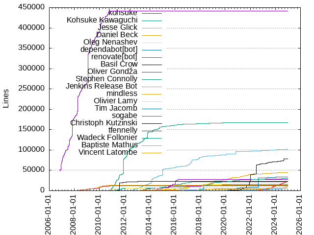
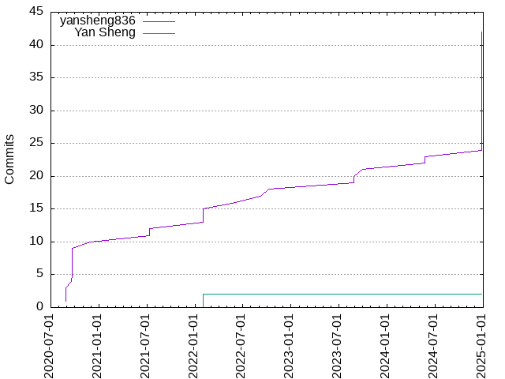

Authors
| Author | Commits (%) | + lines | - lines | First commit | Last commit | Age | Active days | # by commits |
|---|
| yansheng836 | 42 (95.45%) | 198869 | 196740 | 2020-08-27 | 2024-12-26 | 1582 days, 4:18:54 | 14 | 1 |
| Yan Sheng | 2 (4.55%) | 1 | 0 | 2022-02-01 | 2022-02-01 | 0:58:39 | 1 | 2 |


| Month | Author | Commits (%) | Next top 5 | Number of authors |
|---|
| 2024-12 | yansheng836 | 19 (100.00% of 19) | | 1 |
| 2024-05 | yansheng836 | 2 (100.00% of 2) | | 1 |
| 2023-09 | yansheng836 | 1 (100.00% of 1) | | 1 |
| 2023-08 | yansheng836 | 2 (100.00% of 2) | | 1 |
| 2022-10 | yansheng836 | 1 (100.00% of 1) | | 1 |
| 2022-09 | yansheng836 | 1 (100.00% of 1) | | 1 |
| 2022-06 | yansheng836 | 1 (100.00% of 1) | | 1 |
| 2022-02 | yansheng836 | 3 (60.00% of 5) | Yan Sheng | 2 |
| 2021-07 | yansheng836 | 2 (100.00% of 2) | | 1 |
| 2020-11 | yansheng836 | 1 (100.00% of 1) | | 1 |
| 2020-09 | yansheng836 | 6 (100.00% of 6) | | 1 |
| 2020-08 | yansheng836 | 3 (100.00% of 3) | | 1 |
| Year | Author | Commits (%) | Next top 5 | Number of authors |
|---|
| 2024 | yansheng836 | 21 (100.00% of 21) | | 1 |
| 2023 | yansheng836 | 3 (100.00% of 3) | | 1 |
| 2022 | yansheng836 | 6 (75.00% of 8) | Yan Sheng | 2 |
| 2021 | yansheng836 | 2 (100.00% of 2) | | 1 |
| 2020 | yansheng836 | 10 (100.00% of 10) | | 1 |
| Domains | Total (%) |
|---|
| gmail.com | 42 (95.45%) |
|---|
| users.noreply.github.com | 2 (4.55%) |
|---|